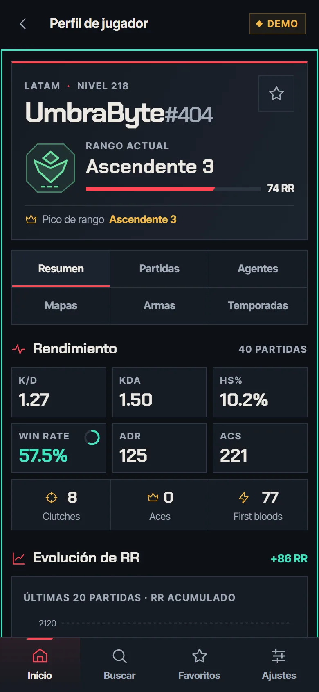

Gaming · Estadísticas
CLUTCH


Proyecto de referencia / concepto: marca, datos y pagos son de demostración.
Proyecto de fans de Valorant con datos de demostración. No está respaldado por Riot Games.
El reto
Organizar estadísticas de Valorant para pasar del progreso general al detalle de una partida en el teléfono.
La solución
Una interfaz oscura con coral y menta organiza perfiles, métricas e historial en pantallas móviles.
- Fondo oscuro
#0E1116 - Coral
#FF4655 - Menta
#3EE6C1
Tipografías · Chakra Petch + Inter Tight
Funcionalidades
- Búsqueda por Nombre#TAG y región.
- Perfiles con rango, K/D, KDA, HS%, win rate, ADR y ACS, y evolución de RR.
- Partidas con detalle de los 10 jugadores y las rondas.
- Agentes, mapas, armas, temporadas, favoritos y ajustes.
- App nativa Android con Capacitor y funcionamiento sin conexión.
Galería
Capturas del proyecto
Siguiente proyecto
PETAL & PIGMENT